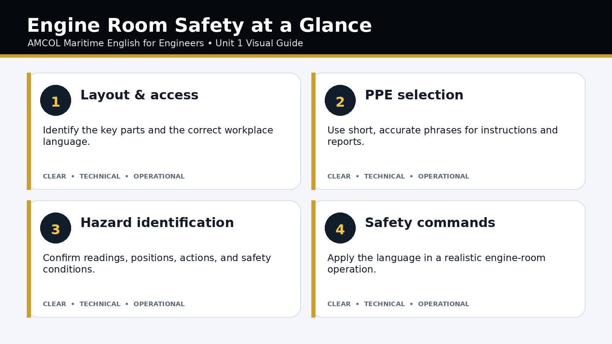
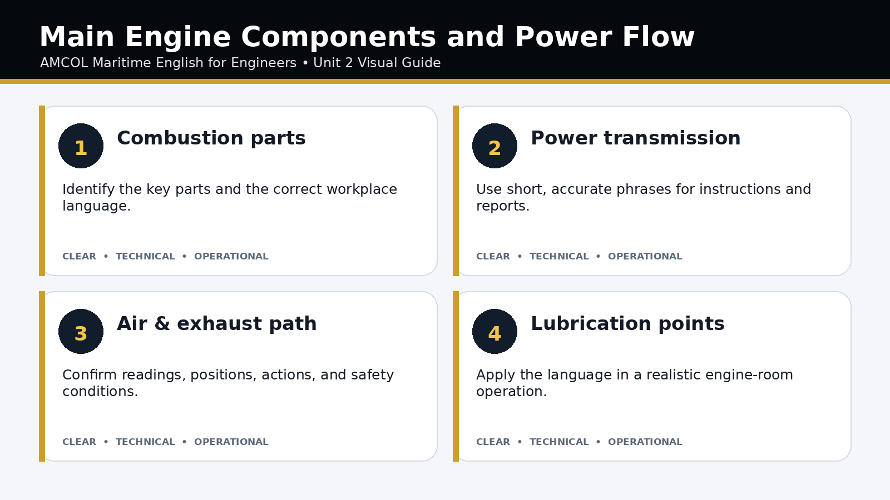
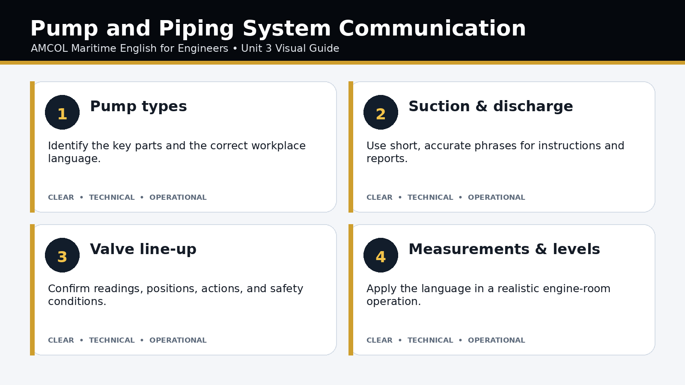
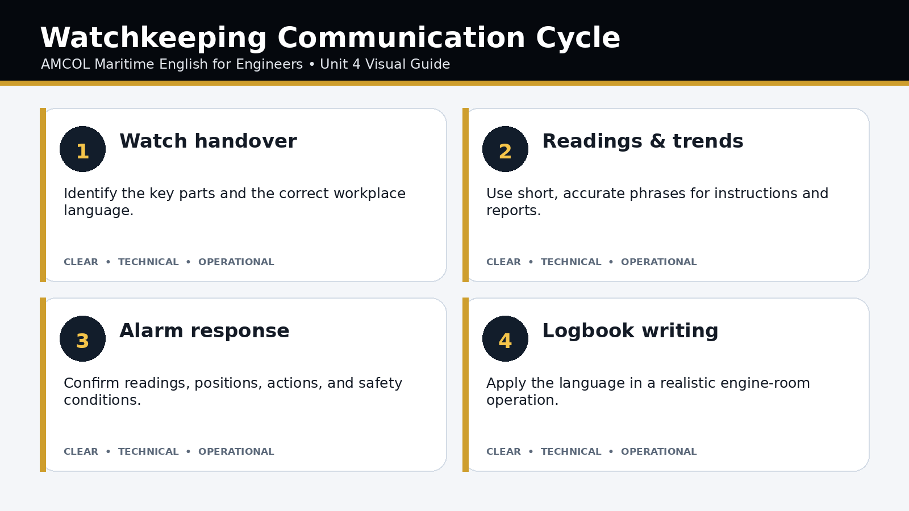
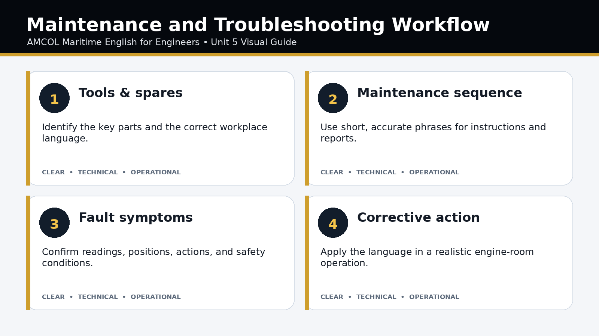
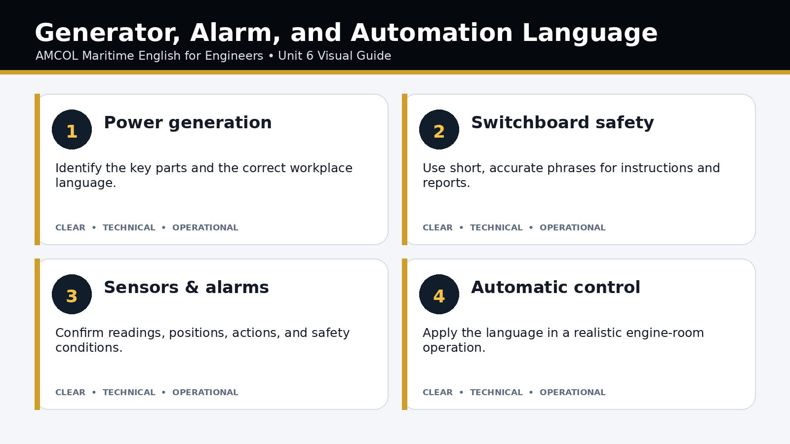
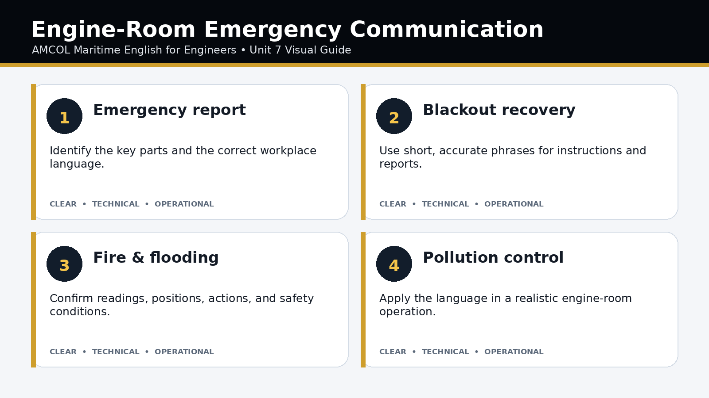

Course Map & Directory
Learning Units

Engine Room Familiarization & Safety
Learn the names of engine-room spaces, recognize hazards, understand PPE requirements, and give or follow clear safety instructions.

Main Engine Parts & Functions
Identify major two-stroke and four-stroke engine components and explain their functions, locations, movement, and relationships.

Pumps, Piping, Valves & Fluid Systems
Describe pumps, valves, pipelines, tanks, pressure, temperature, flow direction, and system line-up procedures.

Engine Room Watchkeeping & Logbook Communication
Receive and hand over an engine-room watch, report machinery readings and alarms, and write accurate logbook entries.

Maintenance, Tools & Troubleshooting
Discuss planned maintenance, tools, spare parts, defects, completed work, and systematic troubleshooting.

Electrical, Automation & Alarm Systems
Communicate about generators, switchboards, motors, control systems, sensors, alarms, trips, and automatic sequences.

Emergencies, Pollution Prevention & Engine Department Coordination
Communicate during machinery emergencies, fire, blackout, flooding, pollution incidents, and coordination with the bridge and deck department.
Seven Pages in Every Unit
Overview
Purpose, outcomes, visual guide, and operational importance.
Vocabulary
Technical terms, definitions, collocations, and examples.
Grammar
Sentence structures for instructions, explanations, and reports.
Technical Language
Standard phrases and closed-loop communication.
Conversation & Audio
Model script, browser listening, pronunciation, and role-play.
Core Feature & Scenario
Operational comic, scenario, roles, and response framework.
Practice & Check
Interactive exercises, performance task, and completion check.
Practice & Assessment Tools
Combined Assessments
Diagnostic pre-test and comprehensive post-test.
Listening Lab
Numbers, units, alarms, reports, and instructions.
Common Error Bank
Correct frequent grammar and technical-language mistakes.
Printable Exams
Classroom worksheets and performance tasks.
Final Capstone
Integrated machinery-operation simulation.
Teacher Guide
Teaching flow, answer keys, and rubrics.